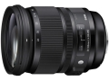
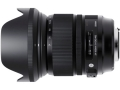
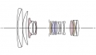
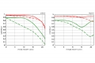

器材库 > 35mm画幅AF变焦镜头 > DG 24-105/4 OS HSM

详细规格
镜头类型
标准变焦镜头
发布日期
2013-10-16
焦距
24mm-105mm
最大光圈
f/4
最小光圈
f/22
视角（对角）
84.1°-23.3°
镜头结构
19片/14组
非球面镜片
3片
光圈叶片
9片
最近对焦距离
45cm
最大放大倍率
0.217倍
驱动马达
HSM（超声波马达）
滤镜口径
82mm
镜头卡口
Canon EF, Minolta/Konica-Minolta/Sony AF, Nikon AF, Sigma SA
防抖
是
颜色
黑色
尺寸
88.6 x 109.4mm
重量
885g
yangongzhi2016-03-26 17:294.58 分
操作性 4.50耐用性 4.50性价比 4.50解像力 5.00色彩还原 4.50机械结构 4.50
南山金牛2015-01-05 16:214.58 分
操作性 5.00耐用性 5.00性价比 3.50解像力 4.50色彩还原 4.50机械结构 5.00
tkartist2014-10-05 21:034.42 分
操作性 5.00耐用性 4.00性价比 4.50解像力 4.50色彩还原 4.50机械结构 4.00
MidnightSugar2014-05-31 14:084.83 分
操作性 5.00耐用性 5.00性价比 4.50解像力 5.00色彩还原 5.00机械结构 4.50
caiqun20062014-03-23 16:394.67 分
操作性 5.00耐用性 4.50性价比 4.50解像力 5.00色彩还原 4.50机械结构 4.50
Z号巡洋舰2013-10-17 09:11
产品图 / 样片
DG 24-105/4 OS HSM

DG 24-105/4 OS HSM

DG 24-105/4 OS HSM

DG 24-105/4 OS HSM